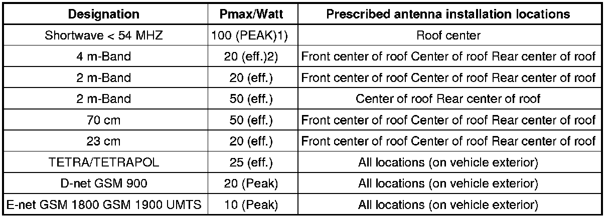

Transmitted Output, Antenna Installation Locations
Transmitted Output, Antenna Installation Locations
Touareg from 2003

* PEAK = max. carrier power (Peak Envelope Power)
* eff. = effective transmission output
• Deviations from these guidelines (location of antenna, frequency, output) are only permitted in special isolated cases after a single-case test carried out by the EMV center of VW AG in Wolfsburg.
• EMV = Electromagnetic Compatibility